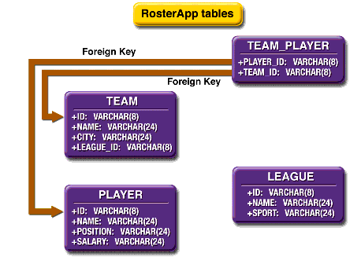

www.netbeans.org
Feedback
java.sun.com
|
Download
www.netbeans.org |
|
API
Feedback java.sun.com |
Creating the Roster EJB Module
To create this project in the IDE, you will create an EJB module project, create the database in PointBase, and generate the CMP entity beans from the database. You will then create a session bean through which the client application accesses the entity beans.
Complete versions of both the EJB module and the client application for this example are in the
<INSTALL>/j2eetutorial14/examples/ejb/cmprosterdirectory.Creating the Project
Creating the Database Tables
The
Rosterexample uses the database tables shown in Table 8-2.

Figure 8-2 Database Tables in
RosterThe instructions that follow explain how to use the
Rosterexample with PointBase, the database software that is included in the Application Server bundle.
- Choose Tools
PointBase Database
- Create the database tables by running the
create.sqlscript.
- Make sure that the
appsrv.rootproperty in your<INSTALL>/j2eetutorial14/examples/file points to the location of your local Application Server installation.- In a terminal window, go to this directory:
<INSTALL>/j2eetutorial14/examples/ejb/cmproster/- Type the following command, which runs the
create.sqlscript:
asant -buildfile create-db.xml- In the Runtime window, expand the Databases node, right-click the
jdbc:pointbase:server://localhost:9092/sun-appserv-samplesnode, and choose Connect. Typepbpublicas the password and click OK. Once the connection is established, expand the connection node's Tables node. There should be nodes for the following tables:Generating the CMP Entity Beans
- In the Projects window, right-click the Enterprise Beans node for the Roster project and choose New
- In the JDBC Connection combo box, select
jdbc:pointbase://localhost:9092/sun-appserv-samples. In the Package field, typeteam. Leave the default settings in the rest of the wizard and click Next.- From the list, select
PLAYER,LEAGUE,TEAM, andTEAM_PLAYERand click Add. Then click Finish. You can view the generated entity beans under the project's Enterprise Beans node.
|
Download
www.netbeans.org |
|
API
Feedback java.sun.com |
All of the material in The J2EE(TM) 1.4 Tutorial is copyright-protected and may not be published in other works without express written permission from Sun Microsystems.